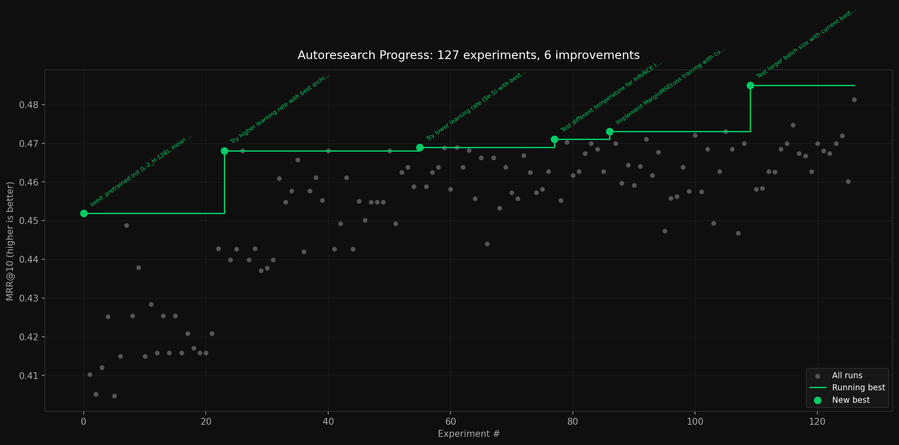

2 minutes
Autoresearch

Leaving the autoresearch loop going, the LLM was able to make 7.8% progress on the distillation task.
I saw Andrej Karpathy’s Autoresearch results the other day and decided to give it a shot on a relatively difficult task: distilling a retrieval/reranking model into a much smaller 10MB model. The model was trained on MS MARCO v1.1 and SQuAD (~169K pairs total) and evaluated on MRR@10.
Setup
I opted for a fully local setup. Claude Code might have been better, but I wanted to control the costs of this experiment. Instead, I went with qwen3-coder:30b as the “researcher” and used the following scheduling loop:
- Researcher checks prior experiment progress and proposes of 55 minutes of experiments, writing them into a todo log.
- Experiments can have variable duration. It is up to the researcher to allocate time.
- The researcher can also update
train.pyto accomodate new experiments. - There is a 5 minute time limit for the researcher, but I never hit it in practice.
- Scheduler reads from todo log. Each experiment must have a duration, which is a pencils-down hard cutoff time
- Scheduler runs experiments from the todo log, recording results to results.txt
- Go back to step 1
Results
Although the researcher was able to find promising results, most of the things it proposed were pretty basic hyperparameter optimizations. While these are important,
- I was really hoping for more novelty and creativity, but it only updated
train.pyone time, to implementMarginMSELoss. - If it is just going to optimize hyperparameters, Bayesian Optimization is a much faster and more effective ways to do that.
That said, the researcher isn’t just doing a random walk of the problem space. There is a clear pattern of improvement even among the failed experiments.